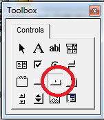
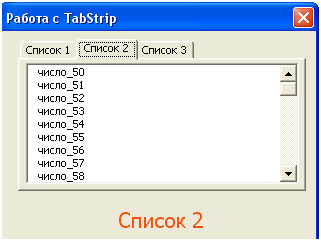

августа 28, 2015
августа 28, 2015  admin
admin Элемент управления TabStrip
августа 28, 2015 admin
Элемент управления VBA TabStrip содержит практически те же свойства, что и MultiPage. Главное отличие заключается в том, что для MultiPage каждая страница может содержать собственный набор элементов управления, а для класса TabStript при переходе по вкладкам отображает всегда одну и ту же информацию. Так, мы при использовании Набора страниц, могли для первого корешка добавить надпись, для второго – список, ну а для третьего – кнопку, для компонента Набор вкладок так не выйдет, если мы на его поверхность добавим, например, объект ListBox(список), то он будет отображаться всегда при переходе между вкладками.

рис . 1.1 Элемент управления TabStrip на панели ToolBox

рис. 1.2 Элемент управления TabStrip на форме
Как только вы выберете в окне ToolBox компонент TabStrip, и перетащите его на поверхность формы, то у вас будут отображаться только две вкладки, например, Tab1 и Tab2. Для управления ими нужно нажать правую кнопку мыши, в итоге появится контекстное меню со следующими пунктами:
Как и для объекта, Набор Страниц, для класса Набор Вкладок определены следующие свойства:
MultiRow – vba свойство, которое может содержать логические значения True или False. MultiRow является актуальным тогда, когда вкладок становится слишком много, и они все не умещаются на поверхность формы UserForm. При установленном значении в False, все корешки будут лежать на одной прямой, и будет добавлена специальная прокрутка для перехода к тем корешкам, которые не видны. При установленном значении в true – вкладки будут располагаться на нескольких строках, при условии, что все они не умещаются в одну строку на поверхности формы.
TabOrientation – определяет расположение вкладок, возможны четыре значения: fmTabOrientationTop – вверху, fmTabOrientationBottom – внизу, fmTabOrientationLeft – слева и fmTabOrientationRight – справа.
SelectedItem – свойство содержит информацию о выбранной вкладке.
Value – целое число, содержит номер выбранного корешка, нумерация начинается с нуля.
Style – позволяет задать стиль: fmTabStyleTabs – в виде закладок, fmTabStyleButton – в виде кнопок и fmTabStyleNone – корешки отсутствуют
Как и для большинства подобных элементов управления, для TabStrip основным событием является событие Change, оно возникает при переходе между корешками.
И так, настало время написать простой пример с использованием класса TabStrip, пример будет подобен тому, что мы рассматривали в статье про объект MultiPage.
В окно Редактор Проектов добавьте новую форму (меню Insert/UserForm) и новый модуль (меню Insert/Module). Форму я назвал TSForm, а модуль – TSModule. В редакторе кода для модуля сразу пропишите:
Sub TSModule()
TSForm.Show
End Sub
Тут в процедуре TSModule мы указываем, что при запуске макроса нужно показать форму с именем TSForm.

Хорошо, теперь на поверхность формы нужно добавить следующие элементы управления (их мы выбираем в окне ToolBox):
TabStrip – просто перетащите данный компонент на поверхность формы, кликните правой кнопкой по одному из флажков и добавьте еще один. В контекстном меню задайте следующие имена: Список 1, Список 2 и Список 3.
ListBox – на поверхность TabStrip добавьте элемент управления список, помните, что он будет отображаться на всех вкладках и един для всего объекта Набор Вкладок.
Label – текстовая метка, разместите ее внизу на поверхности формы, свойство Caption пусть остается пустым.
Теперь в редакторе кода для формы (UserForm) пропишите следующий код:
Private Sub TabStrip1_Change()
Label1.Caption = TabStrip1.SelectedItem.Caption
If TabStrip1.Value = 0 Then
ListBox1.Clear
For i = 0 To 50
ListBox1.AddItem “число_” & i
Next
End If
If TabStrip1.Value = 1 Then
ListBox1.Clear
For i = 50 To 100
ListBox1.AddItem “число_” & i
Next
End If
If TabStrip1.Value = 2 Then
ListBox1.Clear
For i = 100 To 150
ListBox1.AddItem “число_” & i
Next
End If
End Sub
Private Sub UserForm_Initialize()
Label1.FontSize = 16
Label1.ForeColor = &H1055F2
Label1.TextAlign = fmTextAlignCenter
Label1.Caption = TabStrip1.SelectedItem.Caption
If TabStrip1.Value = 0 Then
ListBox1.Clear
For i = 0 To 50
ListBox1.AddItem “число_” & i
Next
End If
If TabStrip1.Value = 1 Then
ListBox1.Clear
For i = 50 To 100
ListBox1.AddItem “число_” & i
Next
End If
If TabStrip1.Value = 2 Then
ListBox1.Clear
For i = 100 To 150
ListBox1.AddItem “число_” & i
Next
End If
End Sub
В общих чертах, при переходе между вкладками происходит проверка свойства Value, в зависимости от значения, список будет содержать те или иные данные. При инициализации самой формы мы будет присваивать свойству Caption объекта label имя выбранного в данный момент флажка объекта TabStrip VBA, а также будет заполнять список данными.